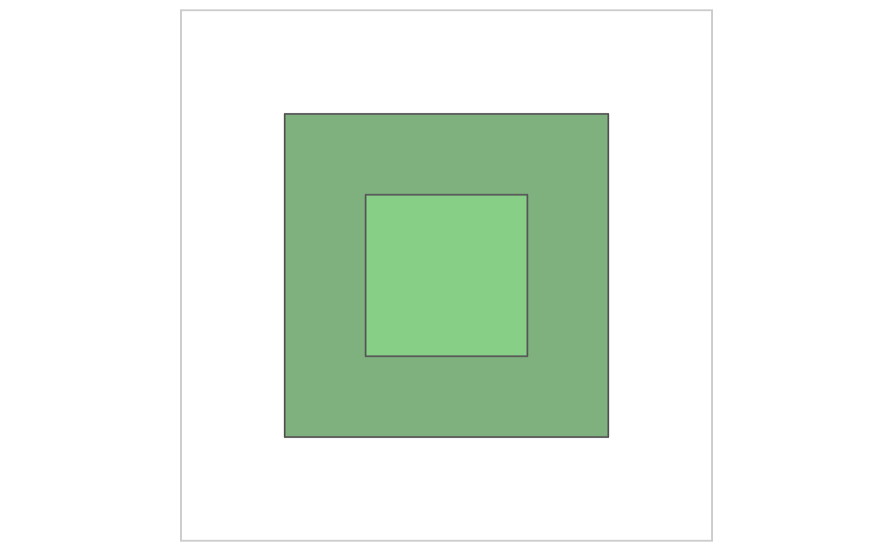
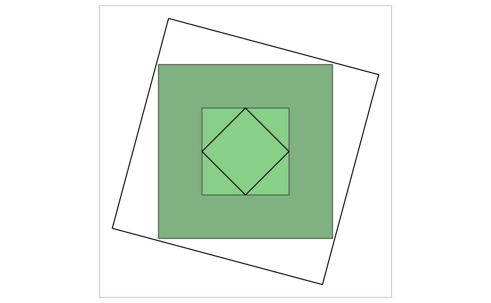
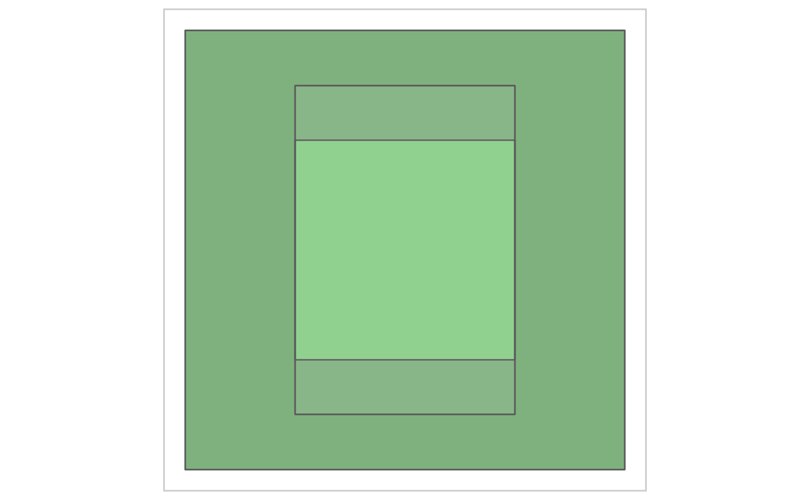
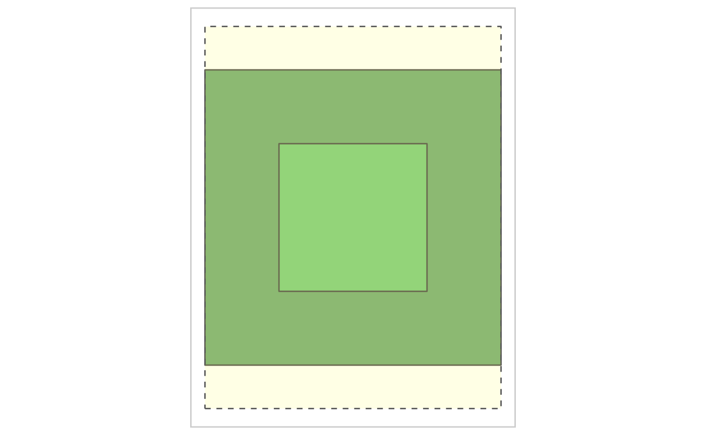

Working with simple feature and bounding box objects
working-sf-bbox-objects.Rmd
crs <- 3857
# Get UMBC from state open data on educational facilities
umbc <-
get_location(
# location = baltimore_msa_counties,
type = "https://geodata.md.gov/imap/rest/services/Education/MD_EducationFacilities/FeatureServer/0",
name = "University of Maryland, Baltimore County",
name_col = "sitename",
crs = crs
)
#> Layer Type: Feature Layer
#> Geometry Type: esriGeometryPoint
#> Service Coordinate Reference System: 3857
#> Output Coordinate Reference System: 4326
# Get a bbox for a 1/4 mile square around the university
bbox_large <-
st_bbox_ext(
x = umbc,
dist = 1/8,
unit = "mile")
# Check if it is a bbox
check_bbox(bbox_large)
#> [1] TRUE
large_sf <- as_sf(bbox_large)
# Checks if data is a sf object
check_sf(large_sf)
#> [1] TRUE
# Checks if data is a sf, bbox, or sfc object
check_sf(large_sf, ext = TRUE)
#> [1] TRUE
# Check if data is sfc
check_sfc(large_sf$geometry)
#> [1] FALSE
# Check if data is a named list of sf objects
check_sf_list(list("large_sf" = large_sf))
#> [1] TRUE
# Check if two sf objects have the same coordinate reference system
check_sf_same_crs(large_sf, bbox_large)
#> [1] TRUE
# Additional checks include check_raster() check_sp()
bbox_small <-
st_bbox_ext(
bbox_large,
dist = -1/16,
unit = "mile"
)
small_sf <- sf_bbox_to_sf(bbox_small)
basemap <-
ggplot2::ggplot() +
layer_location_data(
data = bbox_large,
fill = "darkgreen",
alpha = 0.5
) +
layer_location_data(
data = bbox_small,
fill = "lightgreen",
alpha = 0.5
) +
layer_neatline(
data = bbox_large,
dist = 100,
unit = "meter",
color = "gray80"
)
basemap
small_diamond_sf <-
st_inscribed_square(x = bbox_small, rotate = 45)
large_diamond_sf <-
st_scale_rotate(x = bbox_large, scale = 1.25, rotate = 15)
basemap +
layer_location_data(
data = small_diamond_sf,
fill = NA,
color = "black",
alpha = 0.1
) +
layer_location_data(
data = large_diamond_sf,
fill = NA,
color = "black",
alpha = 0.1
)
#> Coordinate system already present. Adding new coordinate system, which will replace the existing one.
center <-
st_center(x = bbox_large)
dplyr::glimpse(center)
#> List of 4
#> $ sf :Classes 'sf' and 'data.frame': 1 obs. of 1 variable:
#> ..$ centroid:sfc_POINT of length 1; first list element: 'XY' num [1:2] -8539713 4757981
#> ..- attr(*, "sf_column")= chr "centroid"
#> ..- attr(*, "agr")= Factor w/ 3 levels "constant","aggregate",..:
#> .. ..- attr(*, "names")= chr(0)
#> $ sfc :sfc_POINT of length 1; first list element: 'XY' num [1:2] -8539713 4757981
#> $ crs :List of 2
#> ..$ input: chr "EPSG:3857"
#> ..$ wkt : chr "PROJCRS[\"WGS 84 / Pseudo-Mercator\",\n BASEGEOGCRS[\"WGS 84\",\n DATUM[\"World Geodetic System 1984\"| __truncated__
#> ..- attr(*, "class")= chr "crs"
#> $ geom:sfc_POLYGON of length 1; first list element: List of 1
#> ..$ : num [1:5, 1:2] -8539914 -8539512 -8539512 -8539914 -8539914 ...
#> ..- attr(*, "class")= chr [1:3] "XY" "POLYGON" "sfg"
bbox_stretched <-
sf_bbox_expand(
bbox = bbox_small,
y_nudge = 50
)
basemap +
layer_location_data(
data = bbox_stretched,
alpha = 0.1
)
#> Coordinate system already present. Adding new coordinate system, which will replace the existing one.
paper_sf <-
st_bbox_asp(
x = bbox_large,
asp = 8.5/11,
sf = TRUE
)
sf::st_geometry(paper_sf) <- "geometry"
basemap +
layer_location_data(
data = paper_sf,
alpha = 0.1,
fill = "yellow",
linetype = "dashed"
)
#> Coordinate system already present. Adding new coordinate system, which will replace the existing one.